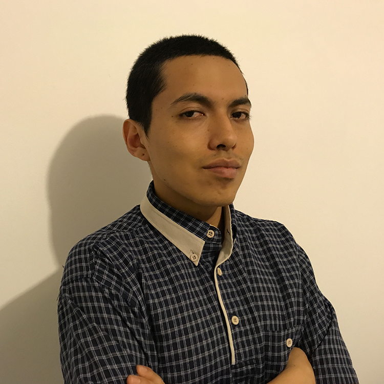
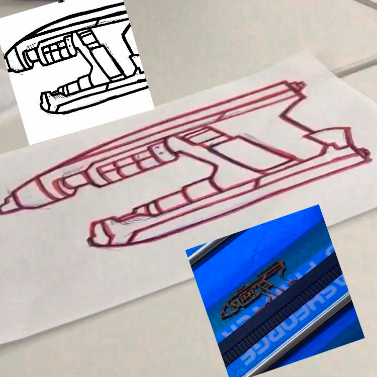
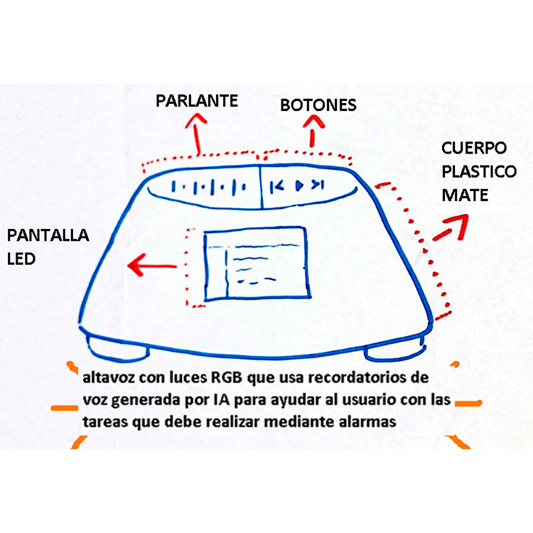

|  |
Mi nombre es Eduardo Velásquez, tengo 24 años y actualmente estudio la carrera de Comunicación Audiovisual Multimedia en Toulouse Lautrec, me encuentro cursando el quinto ciclo de la carrera. Desearía en un futuro convertirme en un profesional destacado en el rubro, buscando la manera más óptima de guiar y aterrizar los distintos puntos de vista de mi equipo y mis clientes.
|
|  |
En la segunda semana de clases realizamos una dinámica grupal en la cuál escogimos distintos elementos para posteriormente imprimirlos en 3D, en el caso de mi grupo decidimos dibujar e imprimir un arma de la película Guardianes de la Galaxia.
|
|  |
En la cuarta semana de clases realizamos una actividad donde cada uno debía dibujar un invento que quisiera hacer realidad dentro del curso, opté por crear la idea de un parlante inteligente, que reproduce música y también cuenta con un sistema de alarmas personalizables.
|